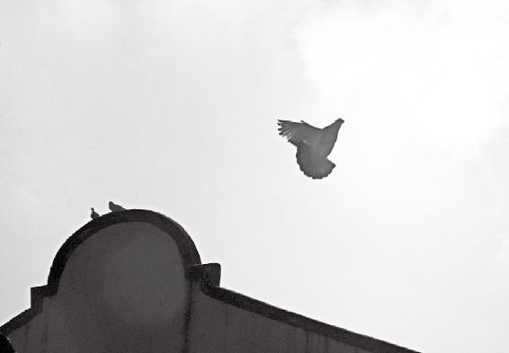
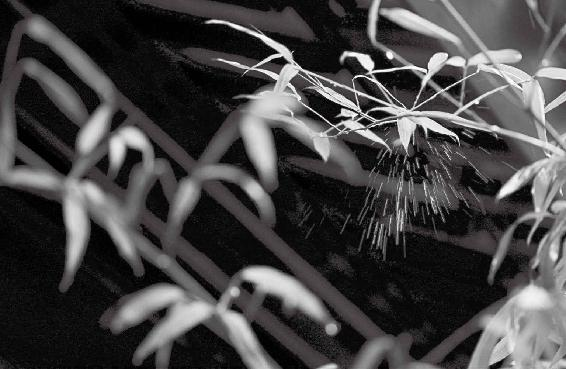
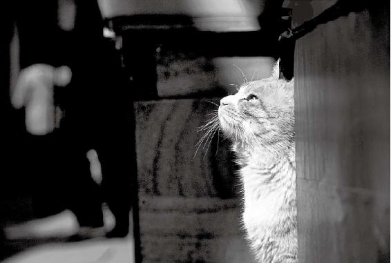
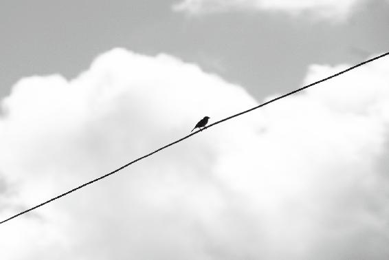

一个人如果在100岁的时候，能够得体而优雅地谢幕，算有福之人。
鼻子自己具有清洁功能，洗鼻子是画蛇添足的行为。
支架、搭桥、心脏起搏器，这些后天人为的做法只能临时救急，不是神明掌握的节奏，终究会出问题。
看了很多孩子的病，其实应该扎针、吃药的是他的爹妈。
经文：
黄帝曰：其不能终寿而死者，何如？岐伯曰：其五脏皆不坚，使道不长，空外以张，喘息暴疾；又卑基墙薄，脉少血，其肉不石，数中风寒，血气虚，脉不通，真邪相攻，乱而相引，故中寿而尽也。
折寿的原因很简单
梁冬：下面，我们讲述《黄帝内经·灵枢》篇里“天年”的最后一部分，做一个收尾的工作。我心中是眷眷不舍啊!
得了脏病，人就会折寿。
在前面，我们讲到了一个生命的战略规划问题：10岁怎么样？20岁怎么样？以十年为一阶段，一直讲到了90岁、100岁。我们想一想，一个人如果在100岁的时候，能够优雅、得体而完美地谢幕，我觉得这是人生比较好的一个境界。

生命中，享受舞台的过程充满激情，谢幕也可以同样的精彩而美好。
徐文兵：算有福之人。
一个人如果在100岁的时候，能够优雅、得体而完美地谢幕，我觉得这是人生比较好的一个境界。算有福之人。
梁冬：所以，在结束的时候，黄帝就问了一个他非常关心的问题：“其不能终寿而死者，何如？”
徐文兵：这个终寿，我们叫天年，两个甲子。为什么有些人活不到这个岁数？黄帝的老师岐伯说了第一个原因——“岐伯曰：其五脏皆不坚。”
梁冬：什么叫“坚”？
徐文兵：我们说五脏“藏精气而不泄也” 。六腑是什么？“传化物而不藏”，它是更虚更实的这么一个传导的过程。你看我们的胃肠道都是平滑肌，它有一个扩张收缩，它是软的。藏精气那个匣匣呢，它是坚固的。那五脏如果不坚，就会出现什么问题？漏！第一说明心、肝、脾、肺、肾不充盈，至少没充盈到那个“坚”的状态；第二说明它可能有遗漏的东西。要知道五脏所藏的精，是你的物质基础，支撑着你的命，就像盖楼打的地基一样，地基不牢，就盖不了多高的楼。
梁冬：精不足，地基不牢，有可能是天生的。
五脏所藏的精，是你的物质基础，支撑着你的命，就像盖楼打的地基一样，地基不牢，就盖不了多高的楼。
徐文兵：后天也有伤害啊！
梁冬：伤害到什么？
徐文兵：伤害到你的肺，伤害到你的肝，伤害到你的肾，这些都是伤害到你的脏啊。人要是得了“脏病”的话就折寿了，折得厉害了。
梁冬：就是五脏皆不坚的时候。
保护好自己的鼻子
徐文兵：“使道”我们前面说了，“使道隧以长，基墙高以方”。这个“使道”呢，我们姑且解释为人督脉下面的这个鼻子。鼻子有什么作用呢？第一，温暖冷空气，你吸入冷空气，它帮你先加热，不会伤到、直接呛到你的肺；第二，它有个过滤功能，它把那些灰尘啊什么的脏东西给挡在外面。它越高越长，你的过滤系统就越好。
先天鼻子的通道不长，后天又遭到人为地破坏，这也是短寿的原因。
梁冬：按道理说，既然鼻子是一个有效的过滤网，那为什么很多人每天要洗鼻子呢？
徐文兵：洗鼻子的人啊，我觉得有点儿画蛇添足，多余。
鼻子越高越长，人的过滤系统就越好。
梁冬：那为什么鼻子可以不用洗呢？空调都要洗过滤网，为什么鼻子不用洗呢？
徐文兵：你自己在流鼻涕呀，你自己在清洁。正常的鼻子，都能过滤那些灰尘或者加温。鼻腔有黏液，它是我们精的一部分。这个精会出现俩问题，一个是你过多、不停地流鼻涕，这样的话，你记忆力会衰退，你会漏精；第二，没有鼻涕，鼻腔是干的。正常人的鼻子是干什么的？分泌正常的鼻腔黏液，然后过滤一定的灰尘、脏东西以后，一擤鼻子，没事儿了，这不就是在清洗自己的空调吗？您干吗还动手哇？这叫人为，这叫“伪”。
鼻子自己具有清洁作用，洗鼻子是画蛇添足的行为。
梁冬：为什么人会有鼻屎呢？
徐文兵：鼻屎就是鼻涕呀，就是鼻黏膜干燥了以后结的，这是一种病态。还有，像女人的阴道都有自然分泌的黏液保护自己。有的女人为了干净，天天用那些所谓洁阴的东西洗自己，洗到最后怎么了？真菌感染，她人为地把自己天生的黏膜保护层给破坏了。

鼻腔有黏液、阴道有黏膜，这些都是人本身具有的最有价值的保护层，根本不需要外在的协助，人为的破坏是相当愚蠢的。记住：自然的总是最好的。
什么叫阴阳？就是说外面阳的时候我会阴，外面阴的时候我会阳，就是保持一种好像走钢丝时的平衡状态。所以你看那个鼻腔，它既能加温，还能湿润。很多人在气候湿润的南方待惯了，突然到干燥的北方会不适应。但健康人过一段时间他就适应了，一到干燥的时候他就开始分泌一些黏液，自然调整。
什么叫阴阳？就是说外面阳的时候我会阴，外面阴的时候我会阳，就是保持一种好像走钢丝时的平衡状态。
梁冬：所以，当鼻腔比较长的时候呢，对于人的呼吸功能是有帮助的。
徐文兵：当然有帮助了，有长寿的基础。
呼吸急促的人要特别注意
梁冬：那“空外以张”呢？
徐文兵：鼻子短的人，就好像有个特点：你从上往下看都能看见他的鼻孔儿——“空外以张”。
梁冬：鼻孔儿露的人面相不好，原来出处在这儿。
鼻孔儿暴露的人，说明他的呼吸系统有问题。
徐文兵：鼻孔儿暴露的人，说明他的呼吸系统有问题。
梁冬：欧洲人的鼻子长，亚洲人的鼻子短。
徐文兵：生长在寒冷地带的人，鼻子一般都高，都长；多风沙的地方，人眼睛偏小，睫毛长，就是适应环境。
梁冬：所谓长得好看，也是要由外部环境来造就。什么是“喘息暴疾”？
所谓长得好看，也是要由外部环境来造就。
徐文兵：鼻孔儿露的人，呼吸的时候他跟健康人不一样。真正健康的人呼吸是什么？均匀、绵长、深远。你把一张纸放在他的鼻子底下，你都感觉不到那个纸在动。
梁冬：为什么？
徐文兵：深。跟他相反的人都是什么？喘，喘息。呼吸的时候张口抬肩，呼吸的节奏快了。然后就是这种“暴疾”。什么是暴疾？就跟人打呼噜一样，突然一口，深一脚、浅一脚的那种状态。
真正健康的人呼吸是什么？均匀、绵长、深远。你把一张纸放在他的鼻子底下，你都感觉不到那个纸在动。
梁冬：有的人，你总是感觉到他气喘吁吁，一惊一乍的。
徐文兵：这些人身体都不好。真正健康的人都是呼吸比较平、比较和的。我前面不是讲过节奏嘛。肺有个功能，中医叫“肺主治节”。什么叫“治节”？肺是调整人的身体节奏的一个重要器官，我们管它叫相辅之官。就像踢足球的时候，踢着踢着，说后边中场赶紧组织队员来回倒脚，调一下节奏，就是让进攻变得一波一波的。所以，肺如果调整好呼吸的节奏，人就活得长。好比搞匀速跑的人跑得长。如果他跑起步来，突然快启动，再突然慢一下，完了，跑不了多远。
所以，肺的功能如果出现“喘息暴疾”，这个人活不了太长。我经常观察我的病人或者是我周围的人，往那一坐下，你就听见他们呼吸声音很大，我就知道这人有问题。在那一坐都听不到这个呼吸的人，这个人是高人。
观察我们周围的人，往那一坐下，你就听见他们呼吸声音很大，那这人身体有问题。在那一坐都听不到呼吸的人，才是高人。
梁冬：静若处子，才能动若脱兔。
徐文兵：补充一点，我经常告诉别人，锻炼身体有三点：第一要调形，就是摆什么姿势；第二要调息，调呼吸的节奏；第三个最高境界是调心。

静若处子，才能动如脱兔。
先天不足，后天好好补
梁冬：“又卑基墙薄，脉少血，其肉不石”，讲的是什么？
徐文兵：这就要说到遗传了，一个人开始是什么？“以母为基，以父为楯。”当你母亲给你提供的基础“卑”——不牢的时候；当你的父亲给你提供的这防护身体的栅栏，或者叫屏蔽的院墙不坚固、不厚的时候，你的先天就不好，你要想活120岁的话，那就要后天调得特别好。
当你母亲给你提供的基础“卑”——不牢的时候；当你的父亲给你提供的这防护身体的栅栏，或者叫屏蔽的院墙不坚固、不厚的时候，你的先天就不好，你要想活120岁的话，那就要后天调得特别好。
还有，我们说一个人长寿，他的面相叫“使道隧以长，基墙高以方”。他这个基墙是什么？地阁方圆、天庭饱满。所以，我特别喜欢那些有奔儿头的孩子，大奔儿头。这也是基和墙牢固的一个外在表现。
梁冬：“卑基墙薄”的话，就会“脉少血，其肉不石”。这个“石”，有些版本上说是石头的“石”，它其实是通实在的“实”！
徐文兵：我们说肌和肉，放松的状态叫肉，发力的时候叫肌，就是说首先你得有那块肉，咱们再说发力。生活中，很多人是没有肌肉的。怎么检查？手上指头一合，虎口这儿是不是鼓起一块肉？很多人这儿是凹下去的，没有肉。再者，像什么重症肌无力、肌肉萎缩的人，都叫“其肉不石”。如果一个人“其肉不石”，你就知道他的脾气虚到一定程度了。因为什么？脾主肌肉。
少受风寒多增寿
梁冬： “数中风寒”的意思是什么呢？
徐文兵：为什么会“数中风寒”？保卫你的那个卫气弱了。卫气由三个构成，一个是肺气，一个是中焦之气（就是我们吃饭那个气），它们叫后天之气，还有一个是先天的元气。这先天的元气、后天的饮食之气、呼吸之气合而为一，统称卫气。
如果“数中风寒”，你就要折寿的。
当卫气弱了，身体对外的防御功能就差了，所以外面一有“风寒暑湿燥火”六淫的变化，你就容易得病，老得病。病好靠什么？靠元气，调动你的元气把这病邪赶走，你就要额外地比别人消耗很多东西。所以，如果“数中风寒”，你就要折寿的。
梁冬：数中风寒之后，人就会“血气虚，脉不通，真邪相攻，乱而相引，故中寿而尽也”。
徐文兵：血气虚呢，首先是一个虚证。到脉不通呢，里面就会出现瘀血。本来是好血，但好血待那儿老不动，就变成什么？瘀血，由虚证变成了实证。脉不通的话，轻则末稍循环出现障碍，重了则会出现什么冠心病、心肌梗死。开始是体的问题，到最后就是影响我们生命的心的问题，中医管这叫真心痛——就是说旦发夕死，死得很快。这时候也说脉不通。现在医学做什么？支架，搭桥。你脉不通了嘛，我这给你扩一下，临时救急很有效，但长远地我们想一想，为什么那儿气血过不去？造成你“血气虚，脉不通”的原因是什么？基墙的问题、数中风寒的问题、喘息暴疾的问题。
支架、搭桥、心脏起搏器，这些后天人为的做法只能临时救急，不是神明掌握的节奏，终究还是会出问题。
你想一下，喘息的那个波，呼吸运动的气血，必须准确地打倒那一点或瘀血上，如果乱了，节奏就乱了。就如同人工心脏起搏器一样，节奏不是神明掌握的那个点，过几年问题还会出现。

处事要跟着自己的真心走。
梁冬：所谓的心主神明，它其实讲的是——心就是整个身体节奏的总控制器。
现在人都非要拿那个后天强迫的混账意识去控制自己的心，非要把它的节奏给打乱。
徐文兵：你要跟着它的点儿走。现在人都非要拿那个后天强迫的混账意识去控制自己的心，非要把它的节奏给打乱。本来心说你要慢一点儿，你要缓一缓，他就说我要加班，我要去跑步，我要去锻炼。强迫自个儿上跑步机，然后死在跑步机上，这时候心就没法弄了，最后结论是“真邪相攻”。
为什么人半百后总活在痛苦中
梁冬：什么叫“真邪”呀？
人到半百以后就活在一种内乱当中，整天身体都在打架，真邪在相攻。一会儿东风压倒西风，然后西风再压倒东风，总是活在痛苦当中。
徐文兵：“真”是你的元气，“上古天真”，养的是你先天的元气。孟子说了：养吾浩然之气。但是你“数中风寒”，然后“血气虚”，身体里生了自己的“内贼”。外贼加上内鬼都是“邪”。“邪”最后跟谁打仗？不都跟你先天那种天真的元气打仗嘛。
所以，人到半百以后就活在一种内乱当中，整天身体都在打架，真邪在相攻。一会儿东风压倒西风，然后西风再压倒东风，总是活在痛苦当中。
梁冬：“真邪相攻”时，我们的身体就变成了一个战场，红方面军和白方面军赤诚相见，打成一团，这叫“乱而相引”。
徐文兵：打到最后，结果就是乱成一锅粥。很多去找我看病的人，基本上都病到一定程度了，身体都是一团乱麻。乱到一定程度呢，就会形成一种邪神，就是那种邪气。它有根据地，会长出症瘕积聚，给大本营提供营养。然后，它会发出信息和指令去干一些事情。很多人练气功练偏了，会感觉到气流在瞎走，有奇怪的幻听、幻视、幻觉，我们叫走火入魔了——“乱而相引”。什么叫导引？在神的指引下，或者是在通神懂医的人的指引下，把身体的气血归到位。第一要归位，第二要到位，这叫导引。